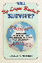
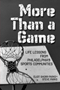
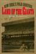

|
Legal
Bases
Baseball and the Law
Abrams, Roger I. 240 pp • 6x9 •
Spring 1998
paper 978-1-56639-890-9
cloth 978-1-56639-599-1
|
|
The
Money Pitch
Baseball Free Agency and Salary Arbitration
Abrams, Roger I. 240 pp • 6x9 •
Spring 2000
cloth 978-1-56639-774-2
|
|
Sport and Neoliberalism
Politics, Consumption, and Culture
edited by Andrews, David L., and Michael L. Silk
322 pp • 6x9 • Fall 2012
paper 978-1-4399-0504-3
cloth 978-1-4399-0503-6
|

|
Rookies
of the Year
Bloss, Bob 224 pp • 6x9 • Spring
2005
cloth 978-1-59213-164-8
|

|
Baseball
Managers
Stats, Stories, and Strategies
Bloss, Bob 400 pp • 6x9.2 • Spring
1999
cloth 978-1-56639-661-5
|

|
The
Braves Encyclopedia
Caruso, Gary 544 pp • 9x12 • Fall
1995
cloth 978-1-56639-384-3 |
 |
Ball Don't Lie!
Myth, Genealogy, and Invention in the Cultures of Basketball
Colás, Yago
228 pp • 6x9 • Spring 2016
paper 978-1-4399-1243-0
cloth 978-1-4399-1242-3
|

|
One Last Read
The Collected Works of the World's Slowest Sportswriter
edited by Didinger, Ray
384 pp • 6x9 • Fall 2007
cloth 978-1-59213-600-1
|

|
The New Eagles Encyclopedia
Didinger,
Ray with Robert S. Lyons 440 pp •
8.3125x10.875 • Fall 2014
cloth 978-1-43991-211-9 |

|
Jim
Bunning
Baseball and Beyond
Dolson, Frank 320 pp • 6x9 • Fall
1998
cloth 978-1-56639-636-3
|

|
The
Cardinals Encyclopedia
Eisenbath, Michael, foreword by Stan Musial 652
pp • 9x12 • Spring 1999
cloth 978-1-56639-703-2
|

|
Muhammad Ali
The Making of an Icon
Ezra, Michael
248 pp • 6x9 • Fall 2008
paper 978-1-59213-662-9
cloth 978-1-59213-661-2
|

|
Long Distance Love
A Passion for Football
Farred, Grant
224 pp • 5.5x8.25 • Fall 2007
paper 978-1-59213-374-1
cloth 978-1-59213-373-4
|

|
The Steelers Encyclopedia
Finder, Chuck
336 pp • 8.375x10.875 • Fall 2012
cloth 978-1-4399-0832-7
|

|
One Less Car
Bicycling and the Politics of Automobility
Furness, Zack
360 pp • 6x9 • Spring 2010
paper 978-1-59213-613-1
cloth 978-1-59213-612-4
|

|
The Eternal Present of Sport
Rethinking Sport and Religion
Grano, Daniel A.
288 pp • 6x9
• Spring 2017
paper 978-1-4399-1280-5
cloth 978-1-4399-1279-9
|
 |
The Boxing Scene
Hauser, Thomas
256 pp • 6x9 • Fall 2008
paper 978-1-59213-977-4
cloth 978-1-59213-976-7
|

|
Equal Play
Title IX and Social Change
edited by Hogshead-Makar, Nancy and Andrew Zimbalist
328 pp • 7x10 • Fall 2007
paper 978-1-59213-380-2
cloth 978-1-59213-379-6
|

|
The
Chicago Cubs Encyclopedia
Holtzman, Jerome and George Vass 568 pp •
9x12 • Spring 1997
cloth 978-1-56639-547-2 |
|
Fishing
the Delaware Valley
Ingram, Jr., George H., Robert F. Marler, Jr. and Robert R. Smith,
foreword by Joe Humphreys 256 pp • 6x9
• Fall 1997
paper 978-1-56639-665-3
cloth 978-1-56639-588-5
|

|
Phil Jasner "On the Case"
His Best Writing on the Sixers, the Dream Team, and Beyond
edited by Jasner, Andy
264 pp • 6x9 • Fall 2017
cloth 978-1-4399-1494-6 |

|
Wheelchair Warrior
Gangs, Disability, and Basketball
Juette, Melvin and Ronald J. Berger
192 pp • 5.5x8.25 • Spring 2008
paper 978-1-59213-475-5
cloth 978-1-59213-474-8
|

|
Men's College Athletics and the Politics of Racial Equality
Five Pioneer Stories of Black Manliness, White Citizenship, and American Democracy
Kaliss, Gregory J.
248
pp • 6x9 • Spring 2012
paper 978-1-4399-0857-0
cloth 978-1-4399-0856-3
|

|
Suicide Squeeze
Taylor Hooton, Rob Garibaldi, and the Fight against Teenage Steroid Abuse
Kashatus, William C.
256
pp • 6x9 • Fall 2016
cloth 978-1-4399-1438-0 |

|
"Batting
Cleanup, Bill Conlin"
edited by Kerrane, Kevin, foreword by Dick Schaap 240
pp • 6x9 • Spring 1997
cloth 978-1-56639-541-0
|

|
Dominican Baseball
New Pride, Old Prejudice
Klein, Alan
200 pp • 6x9 • Spring 2014
paper 978-1-4399-1088-7
cloth 978-1-4399-1087-0
|

|
The
Man in the Dugout
Baseball's Top Managers and How They Got That Way
Koppett, Leonard 424 pp • 7x10 •
Fall 1999
cloth 978-1-56639-745-2
|

|
Koppett's
Concise History of Major League Baseball
Koppett, Leonard 521 pp • 7x10 •
Fall 1998
cloth 978-1-56639-638-7 |

|
The
White Sox Encyclopedia
Lindberg, Richard C., photographs by Mark Fletcher 592
pp • 9x12 • Spring 1997
cloth 978-1-56639-449-9 |

|
Danny
Litwhiler
Living the Baseball Dream
Litwhiler, Danny with Jim Sargent, foreword by Stan Musial
312 pp • 6x9 • Fall 2006
cloth 978-1-59213-524-0
|

|
Bill Giles and Baseball
Lord, John B.
328 pp • 6x9 • Spring 2014
cloth 978-1-43990-786-3
|

|
On Any Given Sunday
A Life of Bert Bell
Lyons, Robert S.
352 pp • 6x9 • Fall 2009
cloth 978-1-59213-731-2
|

|
Palestra
Pandemonium
A History of the Big 5
Lyons, Robert S. 240 pp • 8.375x10.875
• Fall 2002
cloth 978-1-56639-991-3
|

|
Sportista
Female Fandom in the United States
Markovits, Andrei S., and Emily Albertson
268 pp • 6x9 • Fall 2012
paper 978-1-4399-0964-5
cloth 978-1-4399-0963-8
|

|
Sportsex
Miller, Toby 192 pp • 6x9 • Fall
2002
paper 978-1-56639-994-4
cloth 978-1-56639-864-0
|

|
Will Big League Baseball Survive?
Globalization, the End of Television, Youth Sports, and the Future of Major League Baseball
Mitchell, Lincoln A.
208 pp • 5.5x8.25 • Fall
2016
paper 978-1-4399-1379-6
cloth 978-1-4399-1378-9
|

|
Homecourt
The True Story of the Best Basketball Team You've Never Heard Of
Needle, Larry
72 pp • 5.5x8.5 • Spring 2013
paper 978-0-98195-608-4
|

|
Hikes
Around Philadelphia
edited by Newman, Boyd and Linda Newman 224
pp • 5.5x8.25 • Spring 1997
paper 978-1-56639-530-4
cloth 978-1-56639-529-8
|

|
The NFL
Critical and Cultural Perspectives
edited by Oates, Thomas P. and Zack Furness
Foreword by Michael Oriard
256 pp • 6x9 • Spring 2014
paper 978-1-4399-0958-4
cloth 978-1-4399-0957-7 |
|
The
Phillies Reader
edited by Orodenker, Richard 302 pp •
6x9 • Spring 2005
paper 978-1-59213-398-7
cloth 978-1-56639-503-8
|

|
New
Jack Jocks
Rebels, Race, and the American Athlete
Platt, Larry 208 pp • 5.5x8.25 •
Spring 2002
paper 978-1-59213-191-4
cloth 978-1-56639-954-8
|

|
James Naismith
The Man Who Invented Basketball
Rains, Rob with Hellen Carpenter
216 pp • 5.5x8.25 • Fall 2009
paper 978-1-4399-0134-2
cloth 978-1-4399-0133-5
|

|
The Redskins Encyclopedia
Richman, Michael, foreword by Dexter Manley
432 pp • 8.315x10.875 • Fall 2007
cloth 978-1-59213-542-4
|
|
The
Whiz Kids and the 1950 Pennant
Roberts, Robin and C. Paul Rogers, III, foreword by Pat Williams
390 pp • 6x9 • Spring 1996
paper 978-1-56639-790-2
cloth 978-1-56639-466-6
|
 |
Mavericks, Money, and Men
The AFL, Black Players, and the Evolution of Modern Football
Ross, Charles K.
212 pp • 6x9 • Spring 2016
paper 978-1-4399-1307-9
cloth 978-1-4399-1306-2
|

|
The
Cleveland Indians Encyclopedia
Schneider, Russell 584 pp • 9x12 •
Spring 1996
cloth 978-1-56639-405-5 |

|
The Phenomenology of Dance
Sheets-Johnstone, Maxine
Foreword by Merce Cunningham
152 pp • 5.5x8.25 • Spring 2015
paper 978-1-4399-1262-1
cloth 978-1-4399-1261-4 |

|
More Than a Game
Life Lessons from Philadelphia's Sports Community
Shorr-Parks, Eliot, and Steve Parks
266 pp • 6x9 • Spring 2012
paper 978-0-9840429-0-6 |

|
Press
Box Red
The Story of Lester Rodney, the Communist Who Helped Break the
Color Line in American Sports
Silber, Irwin, foreword by Jules Tygiel 256
pp • 6x9 • Spring 2003
paper 978-1-56639-974-6
cloth 978-1-56639-973-9
|

|
Never Easy, Never Pretty
A Fan, A City, A Championship Season
Smith, Dean Bartoli
224 pp • 6x9 • Fall 2013
cloth 978-1-4399-1106-8 |

|
Silent Gesture
The Autobiography of Tommie Smith
Smith, Tommie with David Steele
288 pp • 6x9 • Spring 2008
paper 978-1-59213-640-7
cloth 978-1-59123-639-1
|

|
The SPHAS
The Life and Times of Basketball's Greatest Jewish Team
Stark, Doug, Foreword by Lynn Sherr 344 pp • 6x9 • Spring 2011
cloth 978-1-59213-633-9
|

|
The
Yankees
An Illustrated History
edited by Sullivan, George and John Powers 467
pp • 8.5x11 • Spring 1997
cloth 978-1-56639-553-3
|

|
The Philly Fan's Code
The 50 Toughest, Craziest, Most Legendary Philadelphia Athletes of the Last 50 Years
Tanier, Mike
264 pp • 5.5x8.25 • Fall 2011
paper 978-1-4399-0599-9
|

|
Land
of the Giants
New York's Polo Grounds
Thornley, Stew 192 pp • 7x10 • Fall
2000
cloth 978-1-56639-796-4
|

|
Distant Corners
American Soccer's History of Missed Opportunities and Lost Causes
Wangerin, David
264 pp • 6x9 • Spring 2011
paper 978-1-4399-0631-6
cloth 978-1-4399-0630-9
|

|
Soccer in a Football World
The Story of America's Forgotten Game
Wangerin, David
360 pp • 5.25x8.5 • Spring 2008
paper 978-1-59213-885-2
|
 |
Biz Mackey, a Giant behind the Plate
The Story of the Negro League Star and Hall of Fame Catcher
Westcott, Rich, forewords by Monte Irvin and Ray Mackey III
160 pp • 5.375 x 8.5 • Fall 2017
cloth 978-1-4399-1551-6
|

|
The
Phillies Encyclopedia
Westcott, Rich and Frank Bilovsky, foreword by Harry Kalas
Third Edition
696 pp • 9x12 • Spring 2004
cloth 978-1-59213-015-3
|
|
Philadelphia's
Old Ballparks
Westcott, Rich 224 pp • 7x10 • Spring
1996
cloth 978-1-56639-454-3
|

|
Native
Sons
Philadelphia Baseball Players Who Made the Major Leagues
Westcott, Rich, foreword by Bill Campbell 184
pp • 5.5x8.25 • Fall 2003
paper 978-1-59213-215-7
|

|
The Mogul
Eddie Gottlieb, Philadelphia Sports Legend and Pro Basketball Pioneer
Westcott, Rich, foreword by Paul Arizin
320 pp • 6x9 • Spring 2008
cloth 978-1-59213-655-1
|

|
Veterans
Stadium
Field of Memories
Westcott, Rich, foreword by Darren Daulton 232
pp • 7x10 • Fall 2005
cloth 978-1-59213-428-1
|

|
Winningest
Pitchers
Baseball's 300-Game Winners
Westcott, Rich 216 pp • 5.5x8.25 •
Spring 2002
paper 978-1-56639-949-4
|

|
Great
Home Runs of the 20th Century
Westcott, Rich 232 pp • 6x9 • Spring
2001
cloth 978-1-56639-858-9
|
|
A
Century of Philadelphia Sports
Westcott, Rich, foreword by Edward G. Rendell 400
pp • 7x10 • Spring 2001
cloth 978-1-56639-861-9
|

|
Phillies
'93
An Incredible Season
Westcott, Rich 224 pp • 7x10 • Fall
1994
paper 978-1-56639-231-0
|

|
The Audacity of Hoop
Basketball and the Age of Obama
Wolff, Alexander
224 pp • 10x8 • Fall 2015
cloth 978-1-4399-1309-3 |

|
Outside the Paint
When Basketball Ruled at the Chinese Playground
Yep, Kathleen S.
216 pp • 5.5x8.25 • Spring 2009
cloth 978-1-59213-942-2
|

|
The
Bottom Line
Observations and Arguments on the Sports Business
Zimbalist, Andrew
312 pp • 6x9 • Fall 2006
paper 978-1-59213-513-4
cloth 978-1-59213-512-7
|
|
Circling the Bases
Essays on the Challenges and Prospects of the Sports Industry
Zimbalist, Andrew
234 pp • 5.5x8.25 • Fall 2010
paper 978-1-4399-0283-7
cloth 978-1-4399-0282-0
|